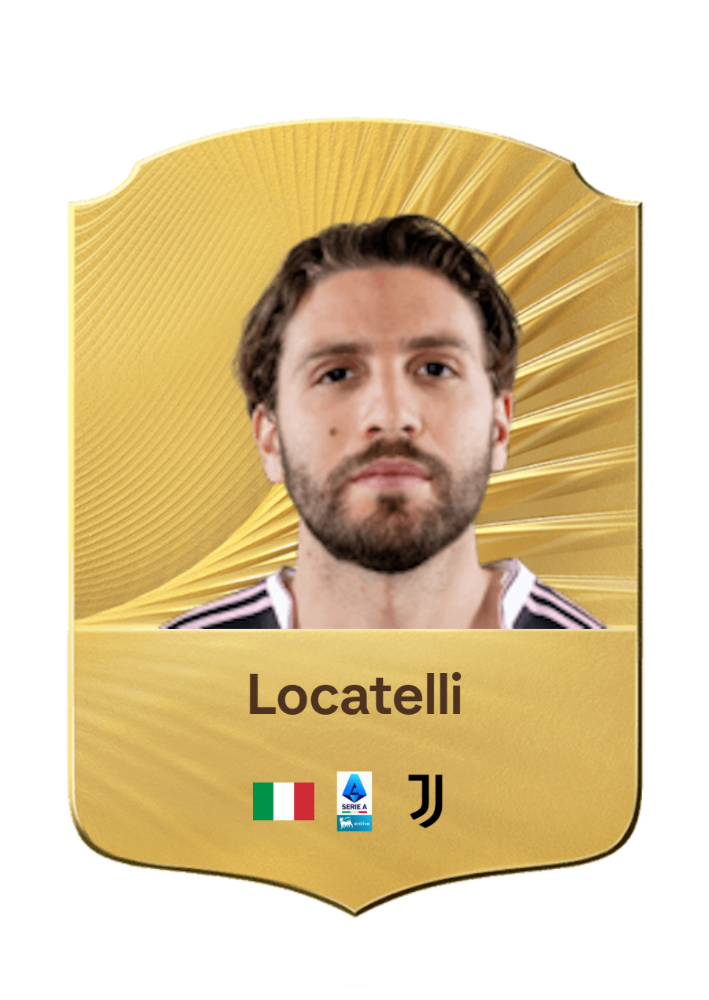
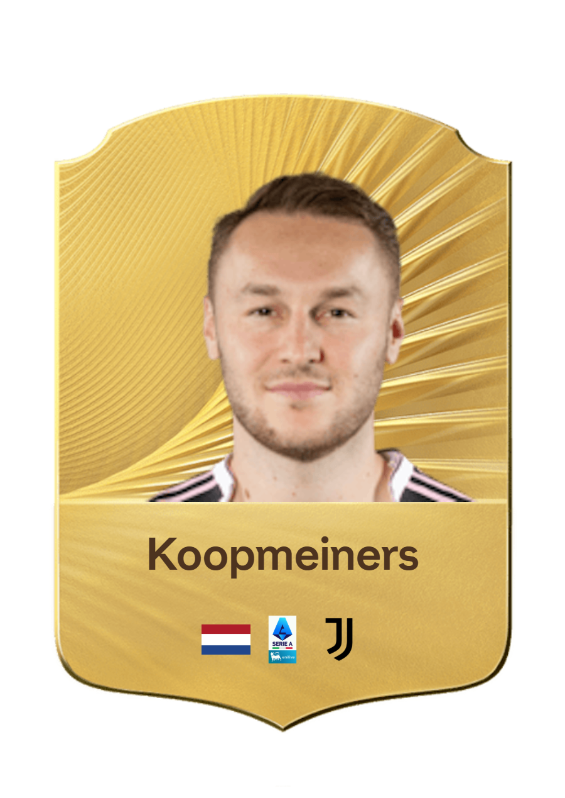
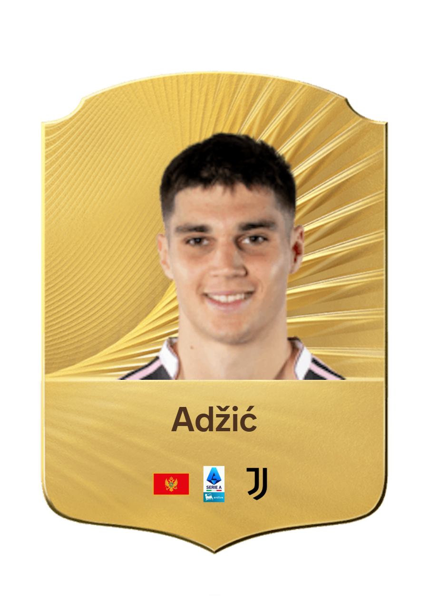
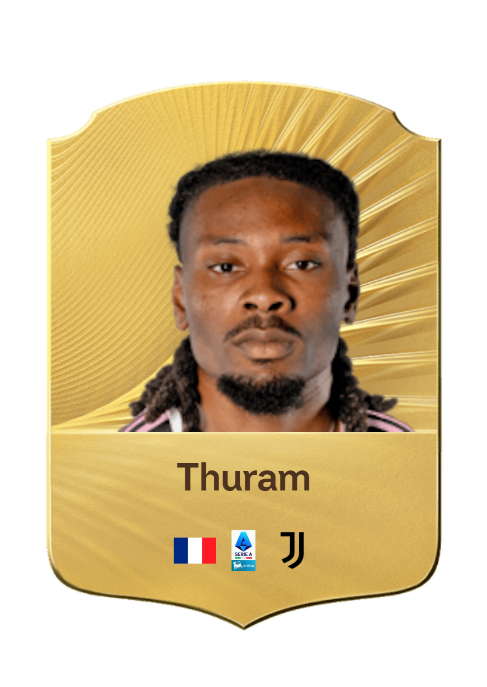
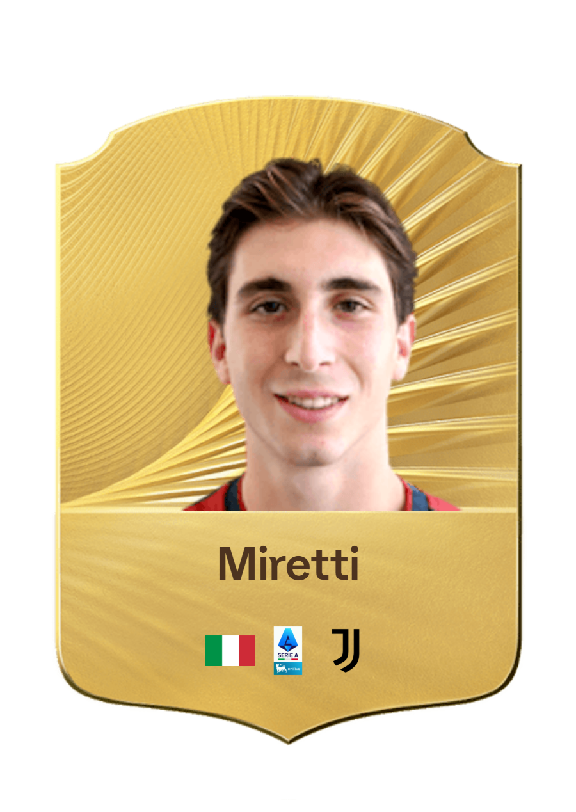
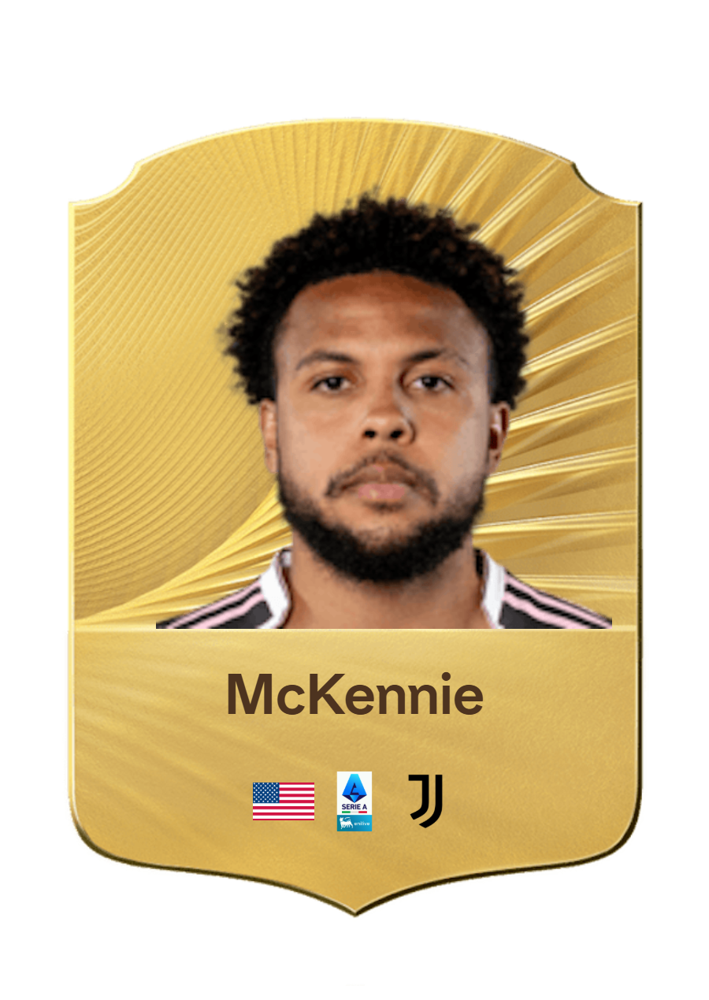
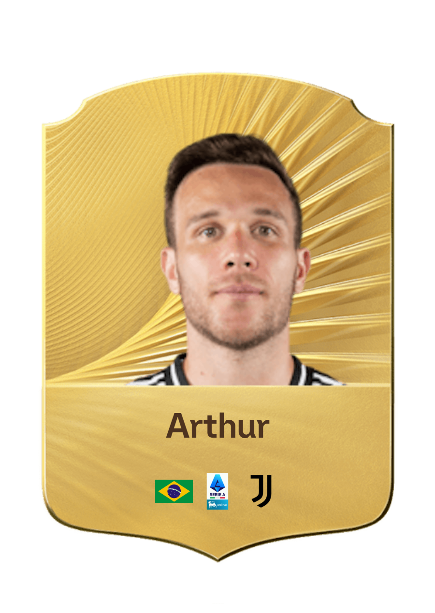

5 - Manuel Locatelli
Arrivato alla Juventus nel 2021, Manuel Locatelli è un centrocampista italiano che indossa la maglia numero 5. Si distingue per la sua visione di gioco, la qualità nei passaggi e la capacità di recuperare palloni.

8 - Teun Koopmeiners
Arrivato alla Juventus nel 2024, Teun Koopmeiners è un centrocampista olandese che indossa la maglia numero 8. Si distingue per la sua visione di gioco, la qualità nei tiri e la capacità di inserirsi in zona offensiva.

Douglas Luiz
Arrivato alla Juventus nel 2024, Douglas Luiz è un centrocampista brasiliano che indossa la maglia numero 26. Si distingue per la sua tecnica, la sua qualità nei passaggi e la sua capacità di recuperare palloni.

17 - Vasilije Adžić
Arrivato alla Juventus nel 2024, Vasilije Adžić è un centrocampista offensivo montenegrino che indossa la maglia numero 17. Si distingue per la sua tecnica, la sua creatività e la capacità di trovare soluzioni offensive.

19 - Khéphren Thuram
Arrivato alla Juventus nel 2024, Khephren Thuram è un centrocampista francese che indossa la maglia numero 19. Si distingue per la sua potenza fisica, la sua capacità di progressione palla al piede e la qualità nei recuperi.

21 - Fabio Miretti
Arrivato alla Juventus nel 2021, Fabio Miretti è un centrocampista italiano che indossa la maglia numero 21. Si distingue per la sua tecnica, la sua visione di gioco e la sua intelligenza tattica.

22 - Weston McKennie
Arrivato alla Juventus nel 2021, Weston McKennie è un centrocampista statunitense che indossa la maglia numero 22. Si distingue per la sua energia, la sua forza fisica e la sua capacità di inserirsi in zona offensiva.

29 - Arthur Melo
Arrivato alla Juventus nel 2020, Arthur Melo è un centrocampista brasiliano che indossa la maglia numero 29. Si distingue per la sua tecnica, la qualità nei passaggi e la capacità di gestire il ritmo del gioco.
